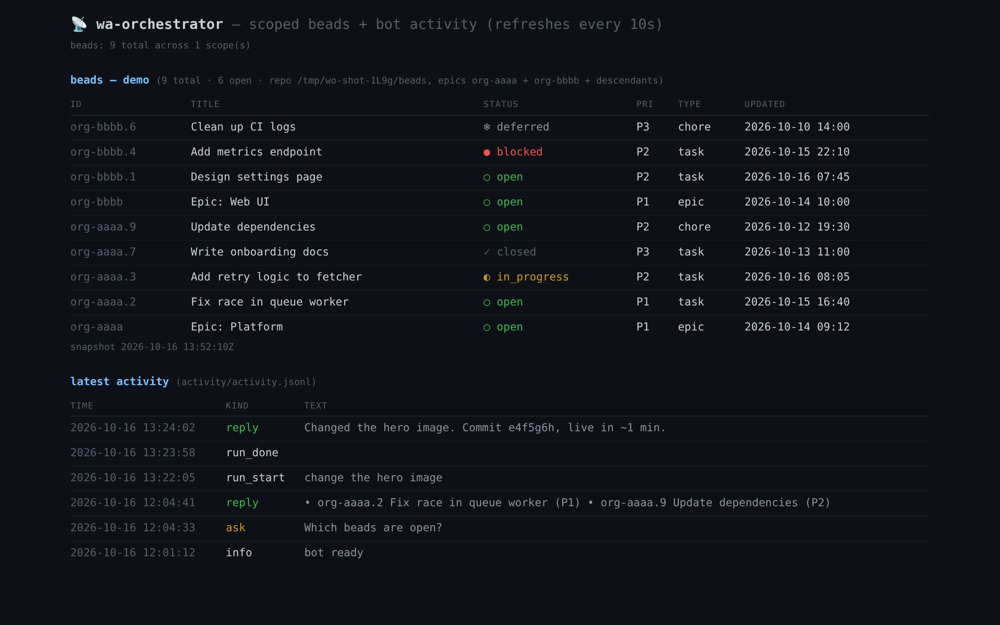

Architecture
The brain is chosen per group (the brain field
of the registry), not per message nor per server. Two profiles ship by default:
| profile | free-text pi … | run modes |
|---|---|---|
beads-project | project beads (list/create by label) | pi run <bead> → executes the bead, artifacts on branch task/<id> |
site-project | scoped read-only beads (live Dolt DB, filtered to a set of epics) | pi edit <instruction> → edits the site, verifies the build, commit + push |
Diagrams
Rendered client-side with mermaid.js (CDN, no build step).
1 · The application once running
(owner account — 1 client)"] subgraph HOST["host — one process"] IDX["index.js
wwebjs · Xvfb · trigger: pi …"] REG["registry
groups[] → brain"] BRAIN["brain.js"] DASH["dashboard.js :8093"] end subgraph BOX["sandbox container (one docker run per brain call)"] PI["pi agent 1.2.0
model locked"] ASK["ask_questions ext
(pi-ask-questions · pinned)"] SUB["subagent tool
(pi-subagents · in-process children)"] HDRT["herdr tools
(pi-herdr · host panes)"] FS["mounts: /workspace = group's own dir · /beads = beads DB (BEADS_DIR)
site checkout · git-home · herdr.sock (host socket)"] end HSRV["host herdr server
(herdr.service · user unit)"] SESS[("conversations/<brain>/<group-slug>/<created>_<slug>_.jsonl")] CFG[("config.json")] PROMPTS[("brain-prompts.json")] ACT[("activity.jsonl")] WA <-->|message_create · sendMessage| IDX CFG -.-> REG REG -->|group → brain profile| BRAIN PROMPTS -.-> BRAIN IDX --> BRAIN BRAIN -->|"docker run --session-id <slug> --session-dir /sessions"| PI SESS -.->|"/sessions volume (one dir per group)"| PI PI <--> FS PI <-->|"ask_questions → extension_ui_request (RPC)"| BRAIN PI <--> SUB HDRT -.->|"bind-mounted socket — HERDR_SOCKET_PATH"| HSRV HSRV -->|"host-owned panes survive docker --rm"| HSRV WA <-->|"clarifying question ⇄ numbered answer"| IDX PI -->|final reply text| BRAIN BRAIN --> IDX IDX -->|🤖 prefixed reply| WA IDX -.->|append asks · replies · runs| ACT ACT -.->|read| DASH
2 · One group message → one AI reply
Quickstart
npm install
bash sandbox/build.sh # docker image (pi, bd, jq, hugo_extended + pinned pi packages:
# provider, ask-questions, pi-subagents, pi-herdr + herdr client)
cp config.template.json config.json # fill JIDs + absolute paths
cp brain-prompts.template.json brain-prompts.json # adapt prompts
# user-scoped systemd units provided (fill <HOME>/<NODE_BIN>):
systemctl --user enable --now wa-orchestrator wa-orchestrator-dashboard
Prereqs: docker, xvfb-run, system Chromium, node ≥ 22.
The WhatsApp session lives in sessions/ — one client per
account, never two instances at once. Prompts load from
brain-prompts.json (gitignored); without it the bot falls back to
minimal generic built-in prompts.
Conversations (continuous memory per group)
Each registered group holds one continuous conversation, persisted as a pi session on the host — the bot is not stateless per message. The first turn of a conversation renders the full prompt (*.ask.first: identity, environment, hard rules); every later turn renders a slim continuation (*.ask.turn), because the session already holds the first-turn context. Run-mode calls (run/edit) land in the same group conversation, so a member can ask, order an edit, and check the result across messages.
- Reset: send
pi newin the group — the bot renames the group's session dir aside; the next message starts a fresh first turn. - Storage:
<conversationDir>/<group-slug>/<created>_<slug>.jsonlper brain profile (one dir per group). Deleting it = amnesia; the bot keeps running. - Containers stay disposable (
docker run --rm): continuity comes from the session file, and the model lock is re-verified on every start — resumed sessions included.
Clarifying questions (structured Q&A in the group)
When a requirement is blurry, the brain asks the group instead of guessing: the sandbox ships the pi-ask-questions extension (pinned, loaded via the local-path packages list in the host-generated settings.json), which registers an ask_questions tool. Over RPC it becomes a normal extension_ui_request/extension_ui_response dialog that brain.js bridges to the group:
- The brain calls
ask_questions→ pi emits aselect(orinput) request → the bot posts the question in the group with numbered options plus a “Type something.” row for free text. - The next member message in that group is the answer — a number picks that exact option; free text takes the typed row (the follow-up
inputdialog is answered automatically, the group never sees it). - The run timeout is paused while the group is being asked; no answer within
questionTimeoutMs(default 30 min) → the dialog is cancelled and the brain continues.
Activity log: question_asked / question_answered / question_timeout entries.
Multi-agent primitives (delegation)
The sandbox bakes in two pinned delegation layers, so a brain is never stuck doing everything itself:
subagenttool (pi-subagents, in-process): the brain launches child agents —scoutto find,reviewerto check,workerto build,oracleto consult,delegatefor simple sub-tasks — in the same sandbox under the same constraints and model lock. Children are blocking by default (the one-shot RPC brain is SIGKILLed on settle, so a detached child would die mid-work); parallel children are allowed. Config is materialized per run:{"asyncByDefault": false, "toolActivation": "eager"}— eager, because the default "auto" mode hides the tool in any session with history.- herdr tools (
pi-herdr, host panes):herdr_spawn_agentstarts a visible agent pane on the operator's machine. The in-container herdr client talks to the host herdr server over a single bind-mounted socket (herdrSocketPath→HERDR_SOCKET_PATH);herdr_wait_output/herdr_get_agent_resultharvest,herdr_message_agentsteers,herdr_interrupt_agentstops. Panes are host-owned: they survive the disposabledocker --rmbrain runs, and a human watches or types in them from the herdr TUI.herdrSpawnPanepins a dedicated home pane (its own workspace) as the spawn target, so bot agents stay out of the operator's live work.
Host side (required for herdr children to actually start): the herdr.service user unit (template in the repo) keeps the herdr server running (starts only if none is running, Restart=on-failure, lingering); and pi-herdr is installed once on the host, self-contained:
mkdir -p ~/.local/share/wa-orchestrator/pi-herdr && cd $_ npm init -y && npm i @andrewjacop/pi-herdr@0.6.0
then set "herdrPkgDir" in config.json: brain.ts bind-mounts the dir onto itself and loads the package in-sandbox from the same absolute path (the child extension <pkg>/src/child.ts is injected into the child pi running in a host pane, so it must resolve there). Without herdrSocketPath/herdrPkgDir the herdr tools simply fail in-sandbox and the brain falls back to in-process subagents.
Extending
- Add a group = one entry
{"jid", "name", "brain"}ingroups[]+ a restart. JID: first message from the group, orxvfb-run -a node dist/discover.jsduring a maintenance window. - Add a brain = one profile in
brains{}(beads repo, prompt entries, run modes) pointed at by the registry. Give it its ownworkspaceDir(one work area per group — never a shared project repo; the beads DB mounts separately at/beads, resolved from any cwd viaBEADS_DIR).
Security
- Every member of a registered group can command the bot (no per-member auth).
- Write-capable run modes are scoped in the prompt: minimal edits, build
before push, never force-push, never
.github/. - Credentials are materialized inside the container, never in the repo
(
config.jsonandbrain-prompts.jsongitignored; only templates are published). - Everything is traced:
activity/activity.jsonl+ dashboard:8093.
Dashboard
The zero-dependency dashboard (dist/dashboard.js, default
:8093) shows the scoped beads of every cpo brain
profile plus the latest bot activity. Screenshot below — synthetic fixture
data, refreshed against the last good snapshot when a refresh fails:

:8093 — synthetic fixture data (not a live deployment).Pi package / npm
Distributed as a pi
package (keyword pi-package, manifest pi):
pi install npm:wa-orchestrator installs the daemon and the
operations skill.